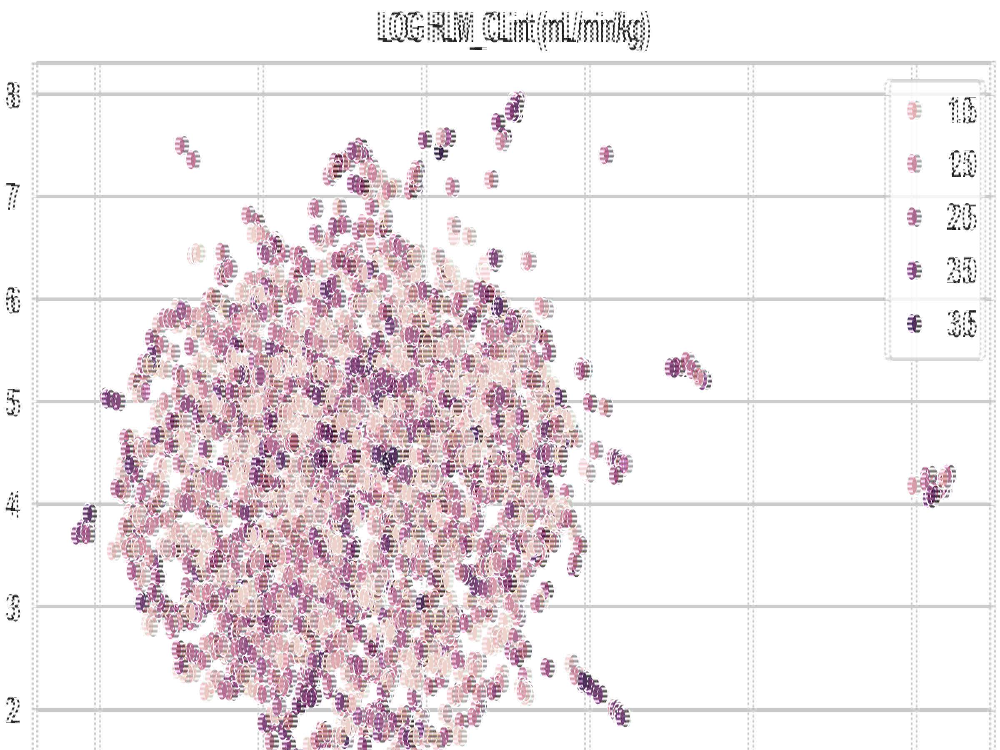
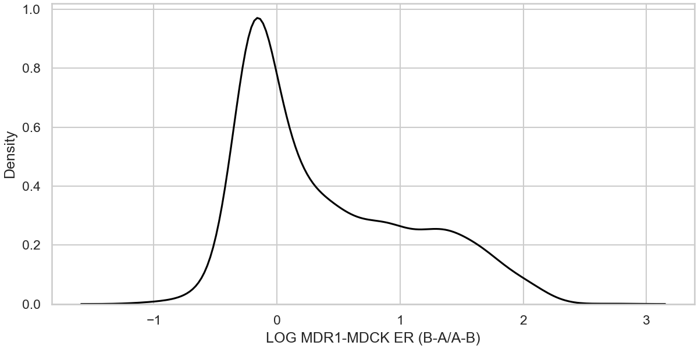
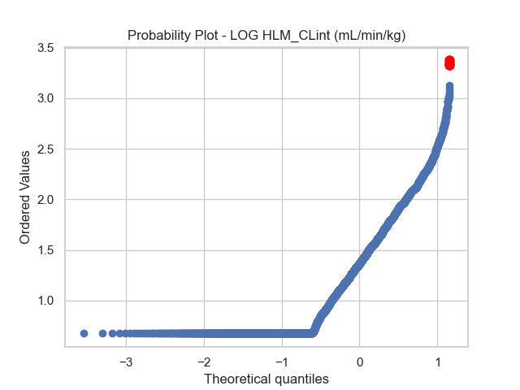
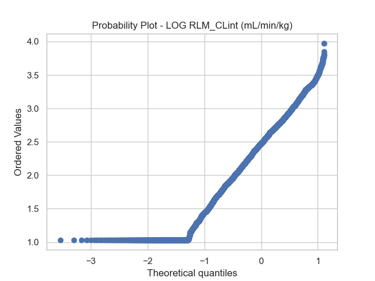
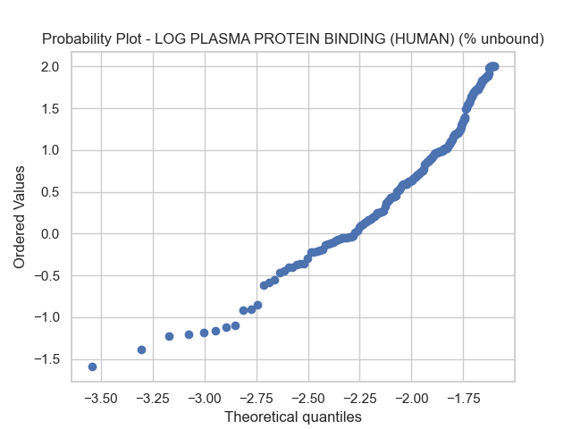
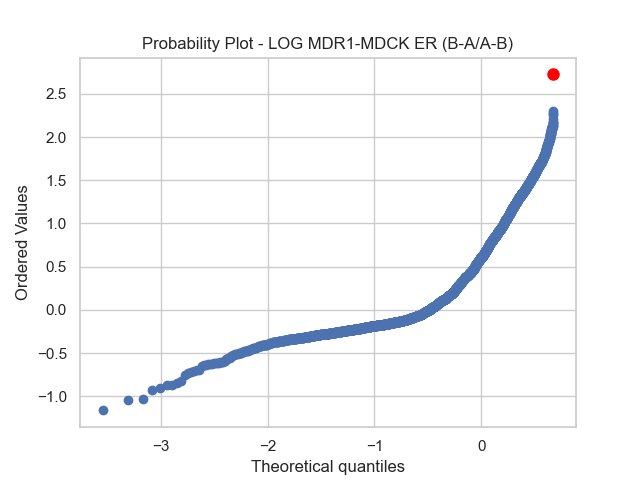
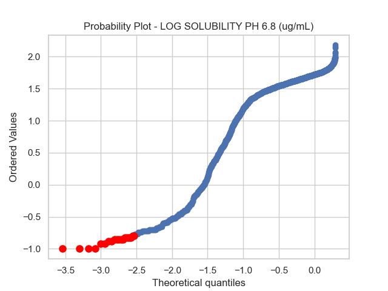

Curation Report
Time: 2024-05-16 01:36:37
Version: dev
MoleculeCuration
Logs
- New column added: MOL_smiles
- New column added: MOL_molhash_id
- New column added: MOL_molhash_id_no_stereo
- New column added: MOL_num_stereoisomers
- New column added: MOL_num_undefined_stereoisomers
- New column added: MOL_num_defined_stereo_center
- New column added: MOL_num_undefined_stereo_center
- New column added: MOL_num_stereo_center
- New column added: MOL_undefined_E_D
- New column added: MOL_undefined_E/Z
- Default `ecfp` fingerprint is used to compute the distributionin chemical space.
- Molecules with undefined stereocenter detected: 186.
Images
Distribution in Chemical Space - ECFP
Molecules with undefined stereocenters

There are 186 molecules with undefined stereocenter(s).It's recommanded to use andcheck the stereoisomers and activity cliffs in the dataset.
ContinuousDistributionVisualization
Images
Data distribution - LOG HLM_CLint (mL/min/kg)

Data distribution - LOG RLM_CLint (mL/min/kg)

Data distribution - LOG PLASMA PROTEIN BINDING (HUMAN) (% unbound)

Data distribution - LOG PLASMA PROTEIN BINDING (RAT) (% unbound)

Data distribution - LOG MDR1-MDCK ER (B-A/A-B)
Data distribution - LOG SOLUBILITY PH 6.8 (ug/mL)

OutlierDetection
Logs
- New column added: OUTLIER_LOG HLM_CLint (mL/min/kg)
- Found 3 potential outliers with respect to the LOG HLM_CLint (mL/min/kg) column for review.
- New column added: OUTLIER_LOG RLM_CLint (mL/min/kg)
- Found 0 potential outliers with respect to the LOG RLM_CLint (mL/min/kg) column for review.
- New column added: OUTLIER_LOG PLASMA PROTEIN BINDING (HUMAN) (% unbound)
- Found 0 potential outliers with respect to the LOG PLASMA PROTEIN BINDING (HUMAN) (% unbound) column for review.
- New column added: OUTLIER_LOG PLASMA PROTEIN BINDING (RAT) (% unbound)
- Found 1 potential outliers with respect to the LOG PLASMA PROTEIN BINDING (RAT) (% unbound) column for review.
- New column added: OUTLIER_LOG MDR1-MDCK ER (B-A/A-B)
- Found 1 potential outliers with respect to the LOG MDR1-MDCK ER (B-A/A-B) column for review.
- New column added: OUTLIER_LOG SOLUBILITY PH 6.8 (ug/mL)
- Found 20 potential outliers with respect to the LOG SOLUBILITY PH 6.8 (ug/mL) column for review.
Images
Outlier detection - LOG HLM_CLint (mL/min/kg)
Outlier detection - LOG RLM_CLint (mL/min/kg)
Outlier detection - LOG PLASMA PROTEIN BINDING (HUMAN) (% unbound)
Outlier detection - LOG PLASMA PROTEIN BINDING (RAT) (% unbound)

Outlier detection - LOG MDR1-MDCK ER (B-A/A-B)
Outlier detection - LOG SOLUBILITY PH 6.8 (ug/mL)
StereoIsomerACDetection
Logs
- New column added: AC_LOG HLM_CLint (mL/min/kg)
- Found no activity cliffs among stereoisomers with respect to the LOG HLM_CLint (mL/min/kg) column.
- New column added: AC_LOG RLM_CLint (mL/min/kg)
- Found no activity cliffs among stereoisomers with respect to the LOG RLM_CLint (mL/min/kg) column.
- New column added: AC_LOG PLASMA PROTEIN BINDING (HUMAN) (% unbound)
- Found no activity cliffs among stereoisomers with respect to the LOG PLASMA PROTEIN BINDING (HUMAN) (% unbound) column.
- New column added: AC_LOG PLASMA PROTEIN BINDING (RAT) (% unbound)
- Found no activity cliffs among stereoisomers with respect to the LOG PLASMA PROTEIN BINDING (RAT) (% unbound) column.
- New column added: AC_LOG MDR1-MDCK ER (B-A/A-B)
- Found no activity cliffs among stereoisomers with respect to the LOG MDR1-MDCK ER (B-A/A-B) column.
- New column added: AC_LOG SOLUBILITY PH 6.8 (ug/mL)
- Found no activity cliffs among stereoisomers with respect to the LOG SOLUBILITY PH 6.8 (ug/mL) column.